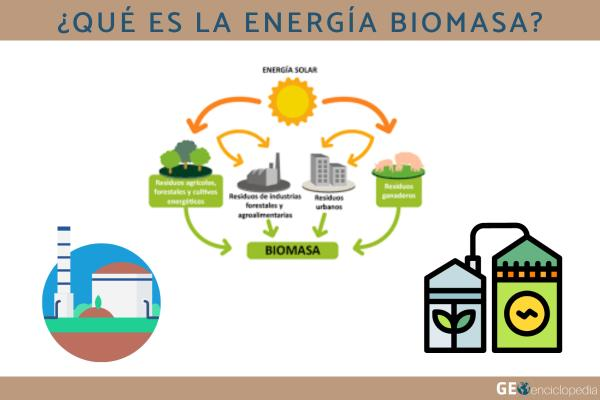
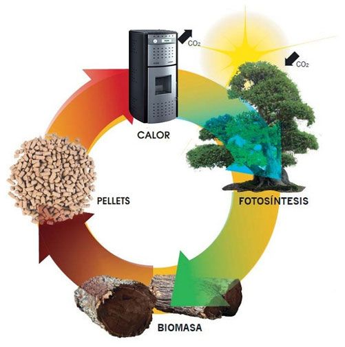
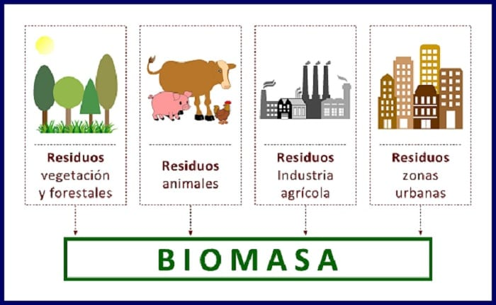
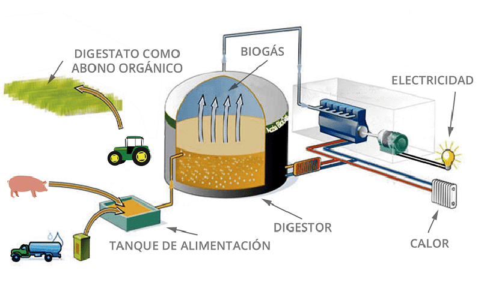
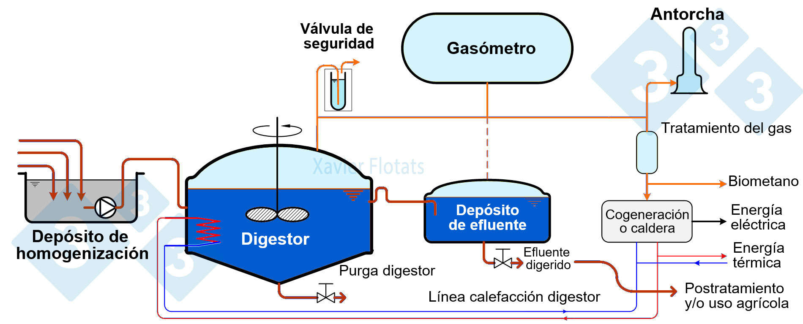
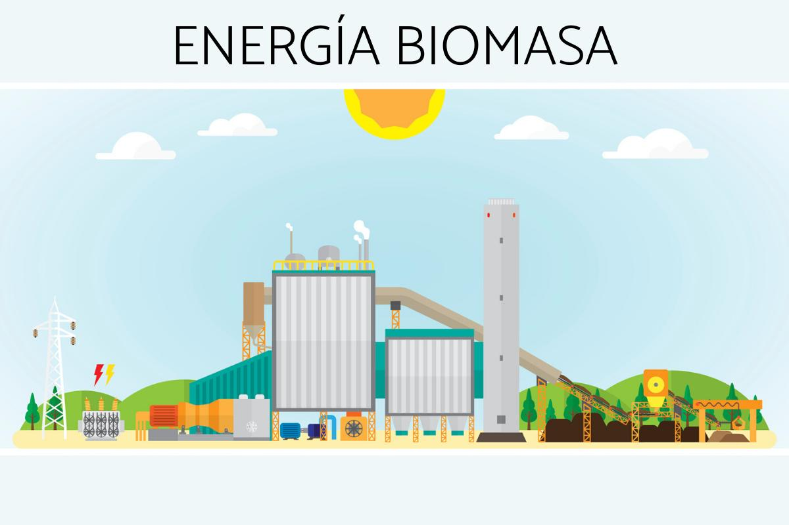
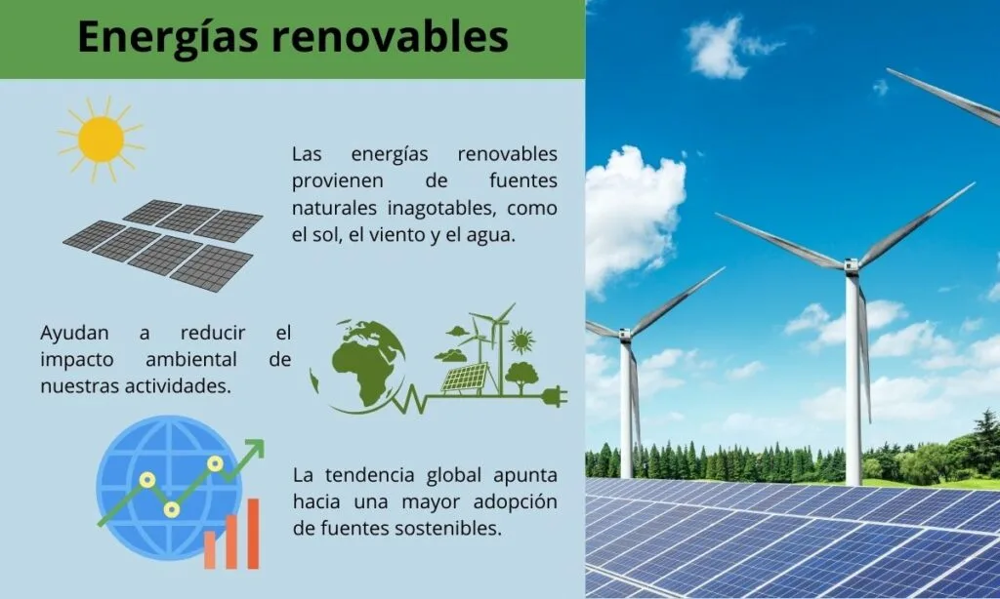
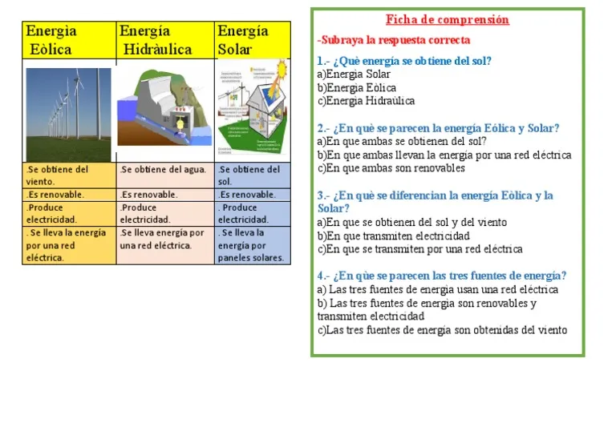

🌱 ¿Qué es la Biomasa como Combustible?
La biomasa es toda la materia orgánica de origen biológico (vegetal o animal) que puede utilizarse como fuente de energía. Cuando hablamos de biomasa como combustible, nos referimos a la conversión de esta materia orgánica en calor, electricidad o combustibles líquidos/gaseosos mediante procesos físicos, químicos o biológicos.
La biomasa es la fuente de energía renovable más antigua de la humanidad: desde que el ser humano descubrió el fuego, ha quemado madera para cocinar y calentarse. Hoy, la tecnología ha transformado esta práctica milenaria en una fuente de energía moderna, eficiente y sostenible que puede competir con los combustibles fósiles.
🎯 Objetivos de Aprendizaje
Al finalizar este tema serás capaz de: definir biomasa y sus fuentes de obtención, identificar los tipos de biomasa y sus usos energéticos, explicar el proceso de generación de biogás en digestores anaeróbicos, comparar ventajas y desventajas de la energía de biomasa, y analizar el papel de la biomasa en la transición energética hacia energías limpias.
🌿 ¿Qué es la Energía de Biomasa?
La energía de biomasa se obtiene aprovechando la energía química almacenada en la materia orgánica a través de la fotosíntesis. Las plantas capturan energía solar y la almacenan como carbohidratos, lípidos y proteínas. Cuando quemamos biomasa o la procesamos, liberamos esa energía solar acumulada.

Figura 1: ¿Qué es la energía biomasa? Ciclo desde la energía solar hasta la producción de energía. Fuente: Ecología Verde.

Figura 2: Ciclo cerrado de carbono de la biomasa: CO₂ neutro porque lo emitido fue previamente absorbido por fotosíntesis. Fuente: Gaserveis.
El Ciclo del Carbono en la Biomasa
La biomasa es considerada CO₂ neutral (o de bajo carbono) porque el CO₂ que libera al quemarse fue previamente absorbido de la atmósfera por las plantas durante su crecimiento. Esto la diferencia fundamentalmente de los combustibles fósiles, que liberan CO₂ acumulado durante millones de años.
♻️ ¿Por qué es CO₂ Neutral?
Fotosíntesis: Plantas absorben CO₂ + H₂O + luz → glucosa + O₂
Combustión/Degradación: Biomasa + O₂ → CO₂ + H₂O + energía + nutrientes
El CO₂ emitido ≈ CO₂ absorbido durante el crecimiento. El balance es cercano a cero, siempre que la biomasa sea renovable y sostenible (replantación de cultivos, gestión forestal responsable).
🪵 Tipos de Biomasa y sus Fuentes
La biomasa puede clasificarse según su origen y su estado de procesamiento. Cada tipo tiene aplicaciones energéticas específicas y diferentes eficiencias.

Figura 3: Las cuatro fuentes principales de biomasa. Fuente: Gaserveis.
🌾 Biomasa Agrícola
Residuos de cultivos: paja de trigo, bagazo de caña de azúcar, cáscaras de arroz, rastrojo de maíz. Es la fuente más abundante en países agrícolas. Se usa para generar electricidad en plantas termoeléctricas o como biocombustibles (etanol).
🌲 Biomasa Forestal
Madera, serrín, corteza, hojas y residuos de explotaciones forestales. Se usa directamente como leña, en estufas de pellets o en plantas de cogeneración. Requiere gestión forestal sostenible para evitar deforestación.
🐄 Biomasa Ganadera
Estiércol, purines y residuos de explotaciones ganaderas. Es la materia prima principal para biogás mediante digestión anaeróbica. También se usa como fertilizante orgánico tras el proceso.
🏙️ Biomasa Urbana
Residuos orgánicos urbanos (ROU): restos de comida, poda de jardines, papel, cartón. Puede compostarse, incinerarse con recuperación de energía o transformarse en biogás en vertederos controlados.
Formas de Biomasa Procesada
- Leña y astillas: Forma más tradicional. Usada en calefacción doméstica y cocinas rurales.
- Pellets y briquetas: Biomasa compactada en cilindros o bloques. Alta densidad energética, fácil transporte y almacenamiento. Usados en estufas y calderas industriales.
- Biogás: Mezcla de metano (CH₄, 50-70%) y CO₂ producida por digestión anaeróbica de materia orgánica. Usado para cocinar, generar electricidad o como biocombustible vehicular (biometano).
- Biodiesel: Combustible líquido producido a partir de aceites vegetales (soja, palma, colza) o grasas animales. Reemplaza o mezcla con diésel fósil.
- Bioetanol: Alcohol etílico producido por fermentación de azúcares (caña de azúcar, maíz). Se mezcla con gasolina (E10, E85) en vehículos flex-fuel.
🔥 Biogás: Energía de la Descomposición
El biogás es una de las formas más eficientes y limpias de aprovechar la biomasa. Se produce mediante digestión anaeróbica: la descomposición de materia orgánica por bacterias en ausencia de oxígeno, en un proceso controlado dentro de un digestor.

Figura 4: Esquema de un biodigestor: residuos orgánicos entran, biogás y digestato salen. Fuente: Gesalor.

Figura 5: Proceso completo de digestión anaerobia con etapas y productos. Fuente: 3tres3 / Xavi Flotats.
Etapas de la Digestión Anaeróbica
🦠 Hidrolisis
Bacterias descomponen carbohidratos complejos, proteínas y lípidos en azúcares simples, aminoácidos y ácidos grasos. Es la etapa más lenta y limitante del proceso.
🧪 Acidogénesis
Bacterias acidógenas transforman los productos de la hidrólisis en ácidos orgánicos (ácido acético, butírico, propiónico), alcoholes, H₂ y CO₂.
⚗️ Acetogénesis
Bacterias acetógenas convierten ácidos y alcoholes en ácido acético, H₂ y CO₂. El pH del digestor debe controlarse cuidadosamente en esta etapa.
🔥 Metanogénesis
Metanógenos (arqueas) producen metano (CH₄) a partir de ácido acético, H₂ y CO₂. Esta es la etapa final que genera el biogás combustible. Temperatura óptima: 35-55°C.
📊 Composición del Biogás
Metano (CH₄): 50-70% —componente combustible, produce energía.
Dióxido de carbono (CO₂): 30-50% —no combustible, puede separarse.
Trazas: H₂S (hidrógeno sulfuroso, mal olor), NH₃ (amoniaco), vapor de agua.
Poder calorífico: 5-7 kWh/m³ (menor que gas natural ~10 kWh/m³, pero aprovechable).
¿Sabías que...?
Una vaca adulta produce aproximadamente 250-500 litros de metano al día por fermentación entérica (en el estómago). Si se recolecta el estiércol de 100 vacas en un biodigestor, se puede generar suficiente biogás para producir 100-200 kWh de electricidad diarios —suficiente para abastecer 30-50 hogares rurales. En Alemania hay más de 10,000 plantas de biogás funcionando, muchas en granjas familiares.
⚖️ Ventajas y Desventajas de la Energía de Biomasa
Como toda fuente de energía, la biomasa tiene aspectos positivos y negativos. La clave está en una gestión sostenible que maximice los beneficios y minimice los impactos.

Figura 6: Infografía general de la energía biomasa y sus aplicaciones. Fuente: Ecología Verde.
🟢 Ventajas
- Renovable: Las plantas y cultivos se pueden replantar y regenerar.
- CO₂ neutral: El carbono emitido fue previamente absorbido (con gestión sostenible).
- Aprovechamiento de residuos: Reduce vertederos y contaminación por residuos orgánicos.
- Seguridad energética: Reduce dependencia de combustibles fósiles importados.
- Empleo rural: Genera trabajo en zonas agrícolas y forestales.
- Versatilidad: Produce electricidad, calor, combustibles líquidos y gaseosos.
- Digestato como fertilizante: Subproducto rico en nutrientes para agricultura.
🔴 Desventajas
- Emisiones de CO₂ y metano: Si no se gestiona bien, puede emitir más que los fósiles.
- Competencia con alimentos: Cultivos energéticos pueden desplazar tierras de alimentación.
- Deforestación: Tala para leña o plantaciones de palma/soja destruye bosques.
- Requiere grandes volúmenes: Necesita mucha materia prima para producir poca energía.
- Emisiones de partículas: La combustión directa genera hollín y compuestos orgánicos volátiles.
- Costos de transporte: La biomasa tiene baja densidad energética, costosa de movilizar.
- Acidificación del suelo: La extracción continua de nutrientes (si no se compensa) empobrece el suelo.
🌎 La Biomasa en el Contexto de las Energías Limpias
La biomasa es una de las energías renovables, junto con la solar, eólica, hidroeléctrica y geotérmica. Cada una tiene sus fortalezas y debilidades, y juntas forman el camino hacia la transición energética.

Figura 7: Infografía de energías renovables: solar, eólica e hidráulica. Fuente: Planeta Resiliente.

Figura 8: Cuadro comparativo de tipos de energías renovables para uso escolar. Fuente: Scribd.
Comparación de Energías Renovables
| Energía | Fuente | Ventaja Principal | Limitación |
|---|---|---|---|
| Solar | Radiación solar | Abundante, modular, bajo mantenimiento | Intermitente (día/nube), requiere baterías |
| Eólica | Viento | Alta eficiencia, costos decrecientes | Intermitente, impacto visual/sonoro, ubicación específica |
| Hidroeléctrica | Flujo de agua | Almacenamiento natural, alta eficiencia | Impacto ecosistémico, depende de lluvias, represas costosas |
| Biomasa | Materia orgánica | Almacenable, aprovecha residuos, genera empleo rural | Emisiones si no se gestiona, competencia con alimentos |
| Geotérmica | Calor interno de la Tierra | Constante (no intermitente), baja huella de carbono | Ubicación geográfica limitada, costos iniciales altos |
🌍 La Transición Energética
La transición energética es el cambio global de un sistema basado en combustibles fósiles (carbón, petróleo, gas) hacia uno basado en energías renovables. La biomasa juega un papel complementario: puede almacenarse y usarse cuando el sol no brilla ni el viento sopla, actuando como "respaldo" de las energías solares y eólicas. Según la IEA, la biomasa podría aportar el 20% de la energía mundial para 2050 si se escala sosteniblemente.
🇻🇪 Biomasa y Energías Limpias en Venezuela
Venezuela tiene un enorme potencial para la energía de biomasa gracias a su extensión agrícola, ganadera y forestal. Sin embargo, el desarrollo de esta fuente energética está aún en etapas muy tempranas comparado con otros países de la región.
🌴 Potencial Biomasero Venezolano
Bagazo de caña de azúcar: Venezuela fue históricamente productor de azúcar; los ingenios azucareros generan toneladas de bagazo que pueden usarse en cogeneración.
Estiércol ganadero: Los Llanos tienen una de las mayores densidades de ganado bovino de Sudamérica. El potencial para biodigestores es enorme.
Residuos forestales: La Amazonía y los bosques de los Andes generan residuos de explotación que podrían aprovecharse.
Residuos urbanos: Caracas genera ~4,000 toneladas diarias de basura, de las cuales ~60% es orgánica. Solo una fracción se recicla o compostiza.
¿Sabías que...?
El bagazo de caña de azúcar fue la principal fuente de energía para los ingenios azucareros de Venezuela durante décadas. En los años 50, muchos centrales azucareros eran autosuficientes energéticamente: quemaban bagazo para generar vapor y electricidad para sus procesos. Con la crisis del sector azucarero, esta práctica decayó, pero representa un modelo que podría revivirse con tecnología moderna de cogeneración.
🤯 Datos Curiosos sobre la Biomasa
¿Sabías que...?
La mayor planta de biogás del mundo está en Finlandia y procesa 100,000 toneladas de residuos orgánicos al año, generando electricidad para 20,000 hogares y abono para 10,000 hectáreas de cultivo. En contraste, la planta de biogás más pequeña comercial del mundo cabe en un contenedor de transporte y alimenta una sola granja.
¿Sabías que...?
El bioetanol de caña de azúcar producido en Brasil (etanol brasileño) tiene una relación de energía retornada sobre energía invertida (EROI) de ~8:1, mientras que el etanol de maíz de EE.UU. tiene un EROI de solo ~1.3:1. Esto significa que el etanol brasileño es mucho más eficiente energéticamente: por cada unidad de energía usada para producirlo, se obtienen 8 unidades de energía final.
¿Sabías que...?
En Suecia, la basura es tan escasa que el país importa residuos orgánicos de otros países europeos para alimentar sus plantas de biogás y cogeneración. Mientras muchos países pagan para enterrar basura, Suecia la convierte en energía y calor para calefacción urbana. Aproximadamente el 50% de la calefacción de Estocolmo proviene de la incineración de residuos con recuperación de energía.
¿Sabías que...?
Los humanos también producen biogás. El intestino humano genera metano y otros gases por la fermentación bacteriana de alimentos no digeridos. Una persona promedio produce 0.5-1.5 litros de gas intestinal al día, compuesto principalmente de nitrógeno, hidrógeno, CO₂ y, en algunos individuos, metano. Aunque no es una fuente energética viable (¡afortunadamente!), demuestra que la digestión anaeróbica es un proceso biológico universal.
📝 Verifica tu Aprendizaje
Responde estas preguntas para comprobar lo que has aprendido.